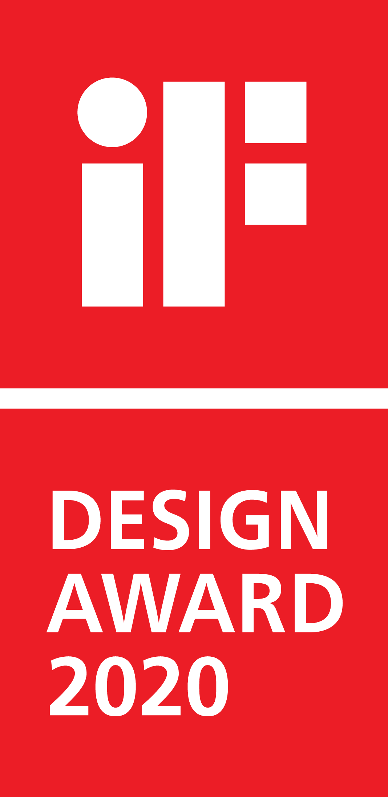
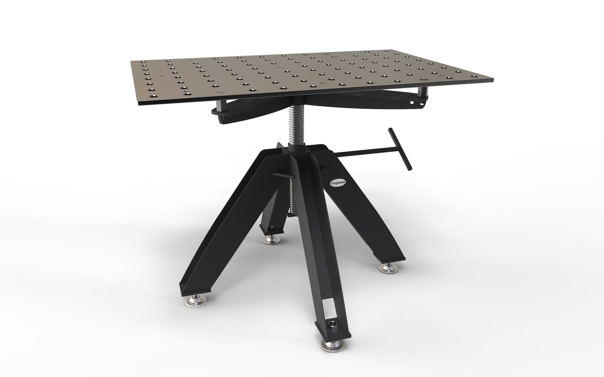

Siegmund Drehtisch
Stationary Rotary Table
Siegmund Drehtisch
Stationary
The stationary Siegmund rotary table is a novelty in the field of welding tables
It can be turned with the spindle and is height-adjustable by 370 mm. With a payload of 500 kg, it is used
in workshops, for welding in metalworking shops and in the metal industry, for woodworking in joineries.
The mobile yet sturdy frame allows you to quickly move the table to where it is needed. The
plasma-nitrided worktop withstands high loads, is scratch-resistant, has a high impact resistance and
extreme basic hardness. The design emphasizes the solid, reliable, durable construction while showing an
elegant lightness. The table is very inexpensive to produce due to its simplicity.
Der stationäre Siegmund Drehtisch ist ein Novum im Bereich Schweißtische
Mit der Spindel lässt er sich drehen und ist um 370 mm höhenverstellbar. Mit einer 500 Kg Traglast findet
er Einsatz in jeder Werkstatt, zum Schweißen in Schlossereien und in der Metallindustrie, zur
Holzbearbeitung in Schreinereien.
Das mobile und trotzdem stabile Gestell ermöglicht ein schnelles Verschieben des Tisches, dahin, wo er
gerade benötigt wird. Die plasmanitrierte Arbeitsplatte hält hohen Belastungen stand, ist kratzfest,
weist eine hohe Schlagzähigkeit und extreme Grundhärte auf. Das Design betont die solide, zuverlässige,
langlebige Konstruktion und zeigt zugleich eine elegante Leichtigkeit. Der Tisch ist durch seine
Einfachheit sehr kostengünstig produzierbar.

Images © Selić Industriedesign